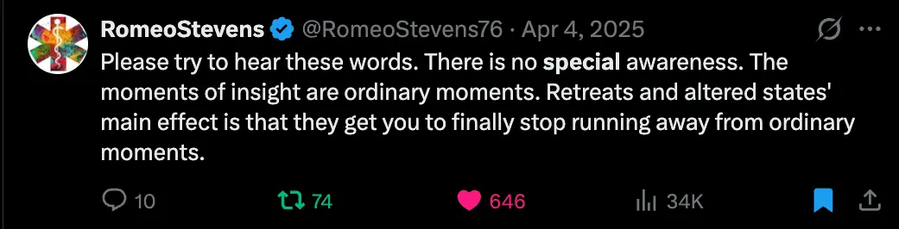

- Return!
- Didn’t work in 2025 (Increasing the skillfulness of my mind, log (2025)) but guess what, I’ve definitely figured it out now 😎 1
- See also “B” floor
2026-02-03
Never had a regular practice
- So, I’ve never had a regular meditation practice, despite having some great experiences on retreat
- I made My meditation journey so far (2025-07-20), summary:
- Did the “45 Days to Awakening” course (aka the Finder’s course) in Sep 2022 and experienced “Access concentration” and really enjoyed the group practices that pointed at awareness
- Did a Goenka vipassana meditation retreat in a jungle in Thailand and improved my concentration in a huge way (Sep 2023)
- I experienced kensho/frickin stream entry experience in Feb 2024
- Did a Jhourney meditation retreat in Aug 2024 and experienced the second Jhana twice
- I think I may have experienced “second path” in Sep 2025 - haven’t written about this yet but it seems very plausible to me. I went from 1st path “it’s awesome but I can’t explain it” to “oh shit I really get what’s going on here”
- However, I’ve never stuck to a regular meditation practice post-retreat!!!
Thought I was ready in July 2025
- I thought I was ready to lock in a proper practice back in July of 2025 (what is it about that time of year??), as detailed here → Should I meditate regularly? (2025-07-20)
- 👆 I thought I’d convinced myself with that writeup, but looking back, it was very cerebral. These weren’t insights that had really clicked, they were things that made sense when I sat down and wrote down the chain of reasoning. But they weren’t like, felt updates in my emotional schema or whatever, or genuine insights, genuine “A”s
- So in late July/early August of 2025, I vibe-coded a thing to take photos of me doing 1-hour Ānāpānasati (Anapanasati) sits, to improve my concentration, and guess what, I didn’t stick to it (due to lack of “B” floor, IMO)
- I only did 11 sits! (Admittedly, I was derailed by flying to Spain to help my Dad in hospital for 3 weeks, and I did some fetters stuff - Fetters work 2025-08-23)
- And of course, the fact that I was having to set up an accountability mechanism (sending time-lapses of myself meditating to my friends) shows that I wasn’t ready, IMO. Like, when it clicks, you should just genuinely want to do it. I’m sure Romeo Stevens wasn’t trying to make himself meditate, Mark of Meditationbook.page, Sasha Chapin, etc.
Ok Feb 2026 Alex, what makes you think you’re so cool now?
- So the disclaimer is that of course, as always, recency bias, and the fact that I am Scrunching - I am currently scrunching with a few things like “aha, I have been left-hemisphere-captured and it’s a high priority to stop this now”, and also “aha, meditation is really great”. I could very easily stop scrunching with these pretty soon, when something new comes along (oh, the human condition)
- My hope is that I can get into a bit of a positive feedback loop where, because I’m scrunched with these enabling things right now, I can experience some genuine benefits from my own meditation practice (I’ve never really experienced this before, it’s always been retreat settings where I’ve noticed changes!), and then it’ll be a flywheel effect
Reflexivity
- This feels like a big insight. It’s 23:00 so I’m gonna fill this in later
- But basically, as we are both kind of the observer/actor in our reality, as well as the hallucinator/creator of it (as e.g. your brain is in a pitch black cave, everything you see if just neurons firing, you are your worldmodel/hallucination), then of course meditation is a valid thing and actually wildly empowering and agency-giving
Left hemisphere capture
- Again, 23:00, but just to quickly say that in the past, I’ve meditated, and then immediately post-sit, gone back into collapsed awareness, “back to work” mode, and then as a result I haven’t noticed any benefits, and have had the story of “oh, it just doesn’t really do much for me”
- Big piece of disconfirming evidence here is that on retreat, when you’re also treating the time between sits as important, it’s so obvious that my brain has been changed by the meditation. I’m meditation immune because like, of course I’m not, it’s just the “we are what we pay attention to” thing. Of course meditating will change your experience
- This feels like a big “A” - from “hm nah it doesn’t do much to me”, to writing up in Should I meditate regularly? (2025-07-20) how actually no there is lots of evidence that it does stuff to me, to a recent insight of like “oh duhhh it’s because of how I live my days in such a state of contracted awareness” (which e.g. also came up in My “introvert” behaviour patterning and why I do it (2026-01-31))
It’s all the same, continuous thing
- I definitely had a feeling of like, “well, retreat time is different, that’s not real life”. It’s so dumb, but I think it can be easy to act like mundane life “doesn’t count”, like being mindful right now for a few seconds “isn’t worth it”, won’t do anything, like it has to be a big 6 hours a day thing or nothing

Footnotes
-
Duning Kruger/unknown unknowns says that of course I’ll be missing enormous things. Probably still big impediments to meditating regularly that aren’t currently in my map at all, and now that I’ve had a few updates I’m like “wahoo, I see it all clearly now, I will never have problems again!“. The biggest thing that comes to mind as a known blocker (so not an unknown unknown, still) is how anal I am about time, how I always feel super short on time, etc. Hence why I’m hoping I can get a pleasant practice going that genuinely improves my days, to create a flywheel ↩